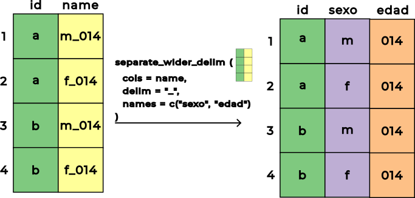
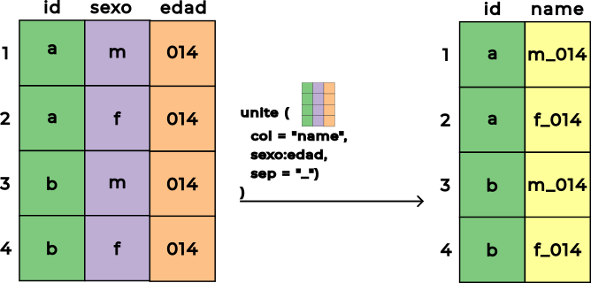

# Cargar paquetes ----
library(tidyverse)
# Importar datos ----
poblacion_col_2018_2070_largo <- read_rds(
file = "data/poblacion_col_2018_2070_largo.rds"
)18 Separación y unión de caracteres en columnas
Este capítulo se basa en (Wickham, 2023, Capítulo 5) así como en la documentación oficial de tidyr respecto a la familia de funciones separate_wider_*() y la función unite() donde tiene como propósito introducir la forma de separar caracteres en columnas o unir múltiples columnas en una sola mediante concatenación de caracteres, utilizando el paquete tidyr e información de proyecciones y retroproyecciones de población nacional por área, sexo y edad para el periodo 2018-2070 de Colombia con base en el Censo Nacional de Población y Vivienda (CNPV) 2018.
Exploraremos los siguientes aspectos:
- ¿Cómo separar caracteres en columnas?
- ¿Cómo unir múltiples columnas mediante concatenación de caracteres?
- ¿Cuál es el proceso para separar caracteres en columnas, transformar y preparar datos para generar pirámides poblacionales?
- ¿Cuál es el proceso para visualizar datos a través de pirámides poblacionales?
Nota 18.1
Para desarrollar el contenido de este capítulo es necesario que hayas exportado y guardado el archivo poblacion_col_2018_2070_largo.rds en la carpeta data, tal como se señaló en el Listado 17.6. En caso que no lo hayas hecho es necesario que lo descargues y lo incluyas dentro de la carpeta data:
En caso que hayas seguido estas indicaciones, procede a crear una nueva carpeta llamada 018_separar-unir-caracteres-cols-en-r y dentro de ella genera el archivo 001_separar-unir-caracteres-cols.R, siguiendo las pautas de la Sección 4.4.
18.1 Separar caracteres en columnas
En el Capítulo 16 se examinaron los problemas más comunes presentes en datos no ordenados, destacando aquel donde múltiples variables se encuentran combinadas dentro de una sola columna (ver Listado 16.3). Para solucionar este inconveniente y garantizar que cada variable conforme su propia columna, el paquete tidyr proporciona la familia de funciones separate_wider_*(), las cuales dividen una columna de caracteres en múltiples columnas rectangulares.
En la Figura 18.1 se ilustra gráficamente el funcionamiento conceptual de la separación de caracteres en columnas mediante separate_wider_delim().

separate_wider_delim()
De acuerdo con la documentación oficial de tidyr, la familia de funciones separate_wider_*() se compone de 3 alternativas especializadas según el criterio empleado para efectuar la división:
separate_wider_delim(): separa una columna en múltiples columnas basándose en un delimitador o carácter separador fijo, como por ejemplo un guion bajo_, una coma,o un guion-. Esta es la función que utilizaremos en el caso de estudio de este capítulo debido a que las categorías a separar se encuentran delimitadas por patrones textuales definidos.separate_wider_position(): separa una columna en múltiples columnas basándose en anchos o posiciones numéricas fijas de los caracteres. Esta función resulta idónea cuando los datos provienen de archivos de ancho fijo donde cada variable ocupa un número invariable de caracteres y no existen delimitadores explícitos.separate_wider_regex(): separa una columna en múltiples columnas basándose en patrones de expresiones regulares (en inglés regular expressions o regex). Esta función ofrece la máxima flexibilidad cuando la estructura interna del texto es variable o compleja, permitiendo extraer patrones específicos.
Nota 18.2
Las expresiones regulares constituyen un lenguaje conciso y formal para describir patrones dentro de cadenas de caracteres. Si bien en este capítulo utilizaremos separate_wider_delim() debido a que los datos poseen un delimitador claro, el lector interesado en profundizar en el uso de expresiones regulares y su aplicación con funciones como separate_wider_regex() puede consultar (Wickham, 2023, Capítulo 15).
Al utilizar la función separate_wider_delim(), los parámetros principales a especificar son:
cols: especifica la columna o variable que se desea dividir.delim: indica la cadena de texto o carácter que actúa como separador.names: suministra un vector de caracteres con los nombres de las nuevas columnas resultantes.too_many: define la acción a tomar si existen más divisiones de las esperadas por el argumentonames, permitiendo descartar elementos sobrantes mediante"drop"o emitir un mensaje de advertencia o error.
18.2 Unir múltiples columnas mediante concatenación de caracteres
La función unite() del paquete tidyr realiza la operación inversa a las funciones de la familia separate_wider_*(). Mientras que las funciones de separación toman una única columna compuesta y la descomponen en varias variables independientes, unite() toma múltiples columnas y las combina o concatena en una sola columna de caracteres uniendo sus valores mediante un delimitador común.
En la Figura 18.2 se ilustra gráficamente el funcionamiento de la función unite().

unite()
De acuerdo con la documentación oficial de tidyr, los parámetros principales de la función unite() son:
data: la tibble u objeto similar sobre el cual se aplicará la transformación.col: el nombre de la nueva columna resultante suministrado como una cadena de texto o símbolo sin comillas....: las columnas que se desean unir, las cuales pueden especificarse individualmente o utilizando rangos y funciones auxiliares de selección idénticas a las empleadas enselect()(ver Sección 10.1.1.2).sep: el separador o delimitador que se insertará entre los valores concatenados de cada columna donde por defecto corresponde a un guion bajo_.remove: un valor lógico que indica si se deben eliminar de la tabla resultante las columnas originales que fueron unidas (TRUEpor defecto o si se deben conservarFALSE).na.rm: un valor lógico que determina si los valores ausentes (NA) deben excluirse durante la concatenación (FALSEpor defecto).
18.3 Caso de estudio: separar caracteres en columnas, transformar y preparar datos para generar pirámides poblacionales de Colombia
En el Capítulo 17 se inició la reestructuración de las proyecciones de población nacional para Colombia provenientes del CNPV 2018, transformando las variables demográficas en formato largo y almacenando el resultado en el archivo poblacion_col_2018_2070_largo.rds. El propósito de este caso de estudio es completar el procesamiento de dicha información a través de 3 fases:
- Separar la columna compuesta
genero_edaden sus variables constituyentes individuales (generoyedad). - Transformar las variables asociando sus tipos adecuados y calculando la participación porcentual de cada grupo.
- Preparar los datos agrupándolos en intervalos etarios quinquenales para consolidar las cohortes necesarias para la construcción de pirámides poblacionales.
Para iniciar con el desarrollo del caso de estudio, es necesario en primera instancia cargar los paquetes requeridos e importar el archivo guardado previamente en la carpeta data, tal como se señala a continuación:
18.3.1 Separar caracteres en columnas
Al examinar la columna genero_edad, se observa que cada celda contiene etiquetas compuestas como "hombres_0_anos" o "mujeres_100_anos_y_mas". En estas cadenas, el primer componente define el género ("hombres" o "mujeres") y el segundo la edad numérica (0, 1, …, 100) mientras que el resto de palabras ("anos", "ano" "anos_y_mas") corresponden a sufijos redundantes.
Para separar esta información en 2 columnas independientes denominadas genero y edad, se utiliza la función separate_wider_delim(). Dado que algunas cadenas poseen múltiples guiones bajos posteriores al número de edad, se emplea el parámetro too_many = "drop" para conservar únicamente los 2 primeros elementos extraídos y descartar los fragmentos adicionales sobrantes, tal como se señala a continuación:
genero_edad mediante separate_wider_delim()
# Separar ----
poblacion_col_2018_2070_separar <- poblacion_col_2018_2070_largo |>
separate_wider_delim(
cols = genero_edad,
delim = "_",
names = c("genero", "edad"),
too_many = "drop"
)
poblacion_col_2018_2070_separar# A tibble: 10,706 × 5
ano total genero edad poblacion
<dbl> <dbl> <chr> <chr> <dbl>
1 2018 48258494 hombres 0 379611
2 2018 48258494 hombres 1 384392
3 2018 48258494 hombres 2 389812
4 2018 48258494 hombres 3 395361
5 2018 48258494 hombres 4 400077
6 2018 48258494 hombres 5 405013
7 2018 48258494 hombres 6 410040
8 2018 48258494 hombres 7 415839
9 2018 48258494 hombres 8 421676
10 2018 48258494 hombres 9 427467
# ℹ 10,696 more rowsEn el Listado 18.2 la función separate_wider_delim() divide la variable genero_edad utilizando el delimitador _. Con names = c("genero", "edad") se asignan las 2 nuevas variables resultantes y con too_many = "drop" se asegura que expresiones como "100_anos_y_mas" asignen únicamente "100" a la columna edad, omitiendo los segmentos posteriores.
18.3.2 Transformar variables
Una vez separadas las variables, la columna edad queda almacenada como una cadena de caracteres (<chr>) y la columna ano puede requerir ser convertida a un número entero. Asimismo, para elaborar una pirámide poblacional se requiere analizar la participación de cada cohorte respecto a la población total del país en cada año.
Para llevar a cabo estas transformaciones, se utiliza la función mutate() convirtiendo ano y edad en enteros con as.integer() y calculando la variable poblacion_pct mediante el cociente entre la población de la cohorte (poblacion) y el total nacional (total), tal como se señala a continuación:
mutate()
# Transformar ----
poblacion_col_2018_2070_transformar <- poblacion_col_2018_2070_separar |>
mutate(
ano = as.integer(ano),
edad = as.integer(edad),
poblacion_pct = poblacion / total
)
poblacion_col_2018_2070_transformar# A tibble: 10,706 × 6
ano total genero edad poblacion poblacion_pct
<int> <dbl> <chr> <int> <dbl> <dbl>
1 2018 48258494 hombres 0 379611 0.00787
2 2018 48258494 hombres 1 384392 0.00797
3 2018 48258494 hombres 2 389812 0.00808
4 2018 48258494 hombres 3 395361 0.00819
5 2018 48258494 hombres 4 400077 0.00829
6 2018 48258494 hombres 5 405013 0.00839
7 2018 48258494 hombres 6 410040 0.00850
8 2018 48258494 hombres 7 415839 0.00862
9 2018 48258494 hombres 8 421676 0.00874
10 2018 48258494 hombres 9 427467 0.00886
# ℹ 10,696 more rowsEn el Listado 18.3, el cálculo poblacion / total genera una medida estandarizada en el intervalo \([0, 1]\) que permite comparar de forma consistente la estructura demográfica entre distintos años, independientemente del crecimiento del tamaño absoluto de la población.
18.3.3 Preparar datos para visualizarlos
En el análisis demográfico y la construcción de pirámides poblacionales tradicionales, las edades individuales suelen consolidarse en grupos o intervalos de 5 años a través de cohortes quinquenales 0-4, 5-9, …, 80-84 y un grupo abierto final 85+.
Para generar estos rangos se utiliza la función cut() de R junto con las funciones seq.int() y str_c():
breaks = c(seq.int(0, 85, 5), "Inf"): define los puntos de corte numéricos cada 5 años desde 0 hasta 85, incluyendo el infinito para agrupar todas las edades de 85 años en adelante.labels: asigna las etiquetas correspondientes concatenando las secuencias de inicio y fin (seq(0, 80, 5)yseq(4, 85, 5)) separadas por un guion mediantestr_c()y añadiendo"85+"al final.right = FALSE: especifica que los intervalos son cerrados a la izquierda y abiertos a la derecha. Es decir \([0, 5)\), abarcando las edades de 0 a 4 años cumplidos.
Posteriormente, se utiliza group_by() junto con summarize() para colapsar las filas sumando la población absoluta (sum(poblacion)) y la proporción porcentual (sum(poblacion_pct)) para cada combinación de año, género y rango de edad, tal como se señala a continuación:
cut(), group_by() y summarize()
# Preparar datos ----
poblacion_col_2018_2070_preparar <- poblacion_col_2018_2070_transformar |>
group_by(ano, genero) |>
mutate(
rango_edad = cut(
edad,
breaks = c(seq.int(0, 85, 5), "Inf"),
labels = c(
str_c(seq(0, 80, 5), seq(4, 85, 5), sep = "-"),
"85+"
),
right = FALSE
)
) |>
ungroup() |>
group_by(ano, genero, rango_edad) |>
summarize(
poblacion = sum(poblacion),
poblacion_pct = sum(poblacion_pct)
) |>
ungroup()
poblacion_col_2018_2070_preparar# A tibble: 1,908 × 5
ano genero rango_edad poblacion poblacion_pct
<int> <chr> <fct> <dbl> <dbl>
1 2018 hombres 0-4 1949253 0.0404
2 2018 hombres 5-9 2080035 0.0431
3 2018 hombres 10-14 2192498 0.0454
4 2018 hombres 15-19 2158466 0.0447
5 2018 hombres 20-24 2069100 0.0429
6 2018 hombres 25-29 1902635 0.0394
7 2018 hombres 30-34 1698592 0.0352
8 2018 hombres 35-39 1595799 0.0331
9 2018 hombres 40-44 1397601 0.0290
10 2018 hombres 45-49 1320949 0.0274
# ℹ 1,898 more rowsEn el Listado 18.4, los datos quedan consolidados a nivel de cohorte quinquenal para cada año y género. Esta tabla constituye la estructura ordenada y preparada requerida como insumo para generar las pirámides poblacionales en la siguiente sección.